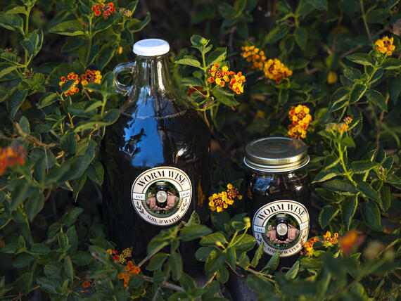
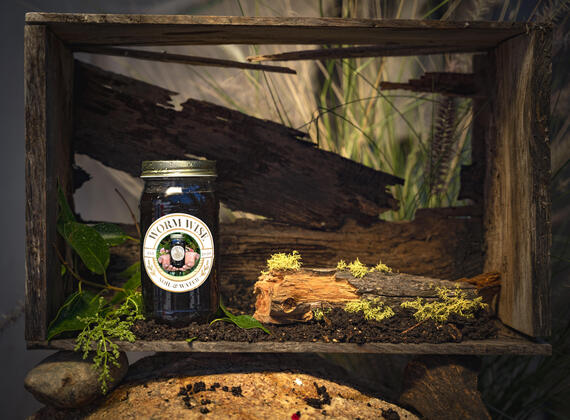
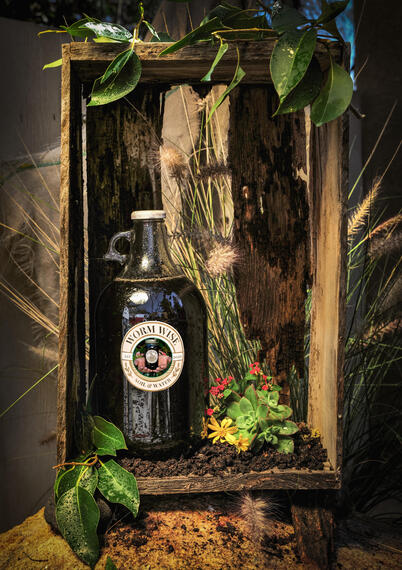

-
WormWise Vermicast Tea
- All units have a 5$ core deposit for bottle
- One gallon units of freshly brewed tea
- 20$
- Five gallon units of freshly brewed tea
- 80$
- How to use:
- Shake well.
- Dilute with water 1:1 (50/50).
- Apply when the sun isn't too hot.
- Use a watering can, or spray bottle to cover soil and plant leaves.
- Repeat every 2-4 weeks, or as needed.


